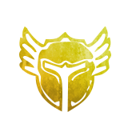
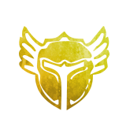

Full Berserker’s Weapons
Check the guides below to see which weapon you shoud take for each encounter.
Consumables
Refer to the Slaying page to see which Utility Food to take for each encounter.
Infusions
18 x Mighty Infusions
Shattered Observatory Fractal CM (Skorvald and Arkk) - Weaver PoV
Nightmare Fractal CM (Mamma & Ensolyss) - Weaver PoV
Nightmare Fractal CM (Siax) - Weaver PoV
 Elementalist.
The best support you can do is by doing good damage to skip mechanics that can be skipped with enough dps.
While that doesn’t sound that interesting/useful at first, it does make fractals A LOT easier for everyone.
Elementalist.
The best support you can do is by doing good damage to skip mechanics that can be skipped with enough dps.
While that doesn’t sound that interesting/useful at first, it does make fractals A LOT easier for everyone. Weaver builds, weapons and the basic rotation.Elementalists due to the Break Bars giving a 50% damage boost.Weaver.Weaver release as it adds one 15% crit chance allowing you to drop for or .Elementalists meaning no matter how many duals skills Elementalist's use, it will always apply once every 10s.
Weaver builds, weapons and the basic rotation.Elementalists due to the Break Bars giving a 50% damage boost.Weaver.Weaver release as it adds one 15% crit chance allowing you to drop for or .Elementalists meaning no matter how many duals skills Elementalist's use, it will always apply once every 10s. Druid, on Chrono and trait from Spellbreaker are the most common sources.Druid should be on Smokescale at start and stack Elementalist then the easiest way is to take and use it while walking between consoles and be in full in case you might need one last cleanse.
The optimal way is to trait in Tempest and use any Overload while walking between consoles.
Elementalist too.Weaver and Druid kills the golem that activates next to the spot where two golems were pulled by chrono. The rest of the group runs to the other golem and kills it quickly before other spinning wall reaches it.Weaver with .
Elementalists auto attack getting absorbed by the boss being invulnerable. Usually and a few auto attacks is enough. As soon as the boss becomes active again should be off cooldown to use as well as blast. After this you can continue with the standard rotation.Elementalist who s first group of ads and who does second.
After killing the first group the Chrono should you up. If not, then enjoy walking. Make sure that someone is picking up the hammer before the last mob at the bottom dies to get a free charge for the next part.
Weavers and you wanna get the most out of your burst under breakbar and with .Elementalist pulls left while the other pulls right. Get one going and all in the choke point after. Meanwhile Chrono and Warrior should cap.Elementalists them then one Elementalist right and pulls mobs down, other Elementalist up after and caps it. Meanwhile Chrono Left and caps it as left side ads agro without needing to be pulled.Elementalist North, one Elementalist East, Warrior West, Chrono Druid South. Reasons for Elementalists taking North and East are because you can into wall and they're closer to Siax. The faster you kill your ad the better it is for your cd's due to in organized kills.Druid should do them.Druid.Elementalist and because of that I recommend over if you need help surviving/not get interrupted during bursts.Weaver should focus on the other one. + it then full and few auto attacks if needed. After that the Anomaly and go to finish it off with and .
Druid, on Chrono and trait from Spellbreaker are the most common sources.Druid should be on Smokescale at start and stack Elementalist then the easiest way is to take and use it while walking between consoles and be in full in case you might need one last cleanse.
The optimal way is to trait in Tempest and use any Overload while walking between consoles.
Elementalist too.Weaver and Druid kills the golem that activates next to the spot where two golems were pulled by chrono. The rest of the group runs to the other golem and kills it quickly before other spinning wall reaches it.Weaver with .
Elementalists auto attack getting absorbed by the boss being invulnerable. Usually and a few auto attacks is enough. As soon as the boss becomes active again should be off cooldown to use as well as blast. After this you can continue with the standard rotation.Elementalist who s first group of ads and who does second.
After killing the first group the Chrono should you up. If not, then enjoy walking. Make sure that someone is picking up the hammer before the last mob at the bottom dies to get a free charge for the next part.
Weavers and you wanna get the most out of your burst under breakbar and with .Elementalist pulls left while the other pulls right. Get one going and all in the choke point after. Meanwhile Chrono and Warrior should cap.Elementalists them then one Elementalist right and pulls mobs down, other Elementalist up after and caps it. Meanwhile Chrono Left and caps it as left side ads agro without needing to be pulled.Elementalist North, one Elementalist East, Warrior West, Chrono Druid South. Reasons for Elementalists taking North and East are because you can into wall and they're closer to Siax. The faster you kill your ad the better it is for your cd's due to in organized kills.Druid should do them.Druid.Elementalist and because of that I recommend over if you need help surviving/not get interrupted during bursts.Weaver should focus on the other one. + it then full and few auto attacks if needed. After that the Anomaly and go to finish it off with and . Berserker Condition but the ones after he will most likely need help.Elementalist. For example, he takes the you spawn at the start then you take the one he spawns during last burn phase.Berserker Condition but the ones after he will most likely need help.Elementalist. For example, he takes the you spawn at the start then you take the one he spawns during last burn phase.Elementalist should do the elementals while others throw wood into the bonfire.
Reason being that as long as bonfire isn’t full throwing more wood speeds up the event timer.Elementalist should skip to the endboss while the rest of the members do the Ice Elemental.Elementalist that’s skipping since it lasts only 30s, then he can use his after.Elementalist’s shouldn’t do Wisps since you can prestack while people put Wisps in so you can use this as a reason to afk, but if your team struggles or is too lazy then should probably do them.
Take and stack Weavers) or wait out the first block and burst after.Elementalists usually do the Dormitories room where you have to destroy the 4 doors and the 2 Portal behind the first two doors.Elementalist right and one left.Elementalist up to trigger 2nd platform.
Chrono does console while other Elementalist and Druid split between the remaining two platforms.
After console is done can /gg.Elementalist should + the upper Oil Buckets then on top of boss.Elementalist respawns and spawns for Chrono to solo skip. You can /gg again after.Elementalist pulls which side and which .
One for the group of mobs that you los behind either Tree or Statue and second for when you go in mid to kill everything else.
While running to mid do a or to interrupt Warrior’s Rushes.Elementalists quite fast.
Elementalist goes to the right, spawns for Chrono to skip and solo kills the group of Grawls that spawn there then ’s the next ads that’ll spawn on the left side.
Meanwhile other Elementalist, Warrior and Druid kill the ads in middle then proceed to left side after to finish the last group of ads.
After everything’s dead go take to the next part.Elementalist should save for him, spawn it around 50%.
Berserker Condition but the ones after he will most likely need help.Elementalist. For example, he takes the you spawn at the start then you take the one he spawns during last burn phase.Berserker Condition but the ones after he will most likely need help.Elementalist. For example, he takes the you spawn at the start then you take the one he spawns during last burn phase.Elementalist should do the elementals while others throw wood into the bonfire.
Reason being that as long as bonfire isn’t full throwing more wood speeds up the event timer.Elementalist should skip to the endboss while the rest of the members do the Ice Elemental.Elementalist that’s skipping since it lasts only 30s, then he can use his after.Elementalist’s shouldn’t do Wisps since you can prestack while people put Wisps in so you can use this as a reason to afk, but if your team struggles or is too lazy then should probably do them.
Take and stack Weavers) or wait out the first block and burst after.Elementalists usually do the Dormitories room where you have to destroy the 4 doors and the 2 Portal behind the first two doors.Elementalist right and one left.Elementalist up to trigger 2nd platform.
Chrono does console while other Elementalist and Druid split between the remaining two platforms.
After console is done can /gg.Elementalist should + the upper Oil Buckets then on top of boss.Elementalist respawns and spawns for Chrono to solo skip. You can /gg again after.Elementalist pulls which side and which .
One for the group of mobs that you los behind either Tree or Statue and second for when you go in mid to kill everything else.
While running to mid do a or to interrupt Warrior’s Rushes.Elementalists quite fast.
Elementalist goes to the right, spawns for Chrono to skip and solo kills the group of Grawls that spawn there then ’s the next ads that’ll spawn on the left side.
Meanwhile other Elementalist, Warrior and Druid kill the ads in middle then proceed to left side after to finish the last group of ads.
After everything’s dead go take to the next part.Elementalist should save for him, spawn it around 50%.Feedback, Questions and Website Discussions can be found here.
Raid builds: Builds are up to date. Updating the guides atm.
Benchmark page: Benchmarks are up to date. Updating the teamcomps atm.